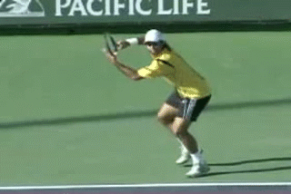
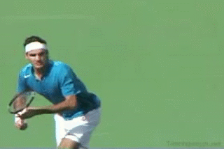
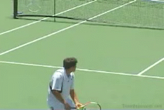
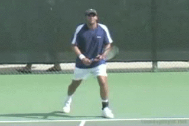
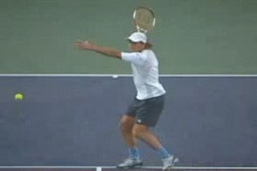
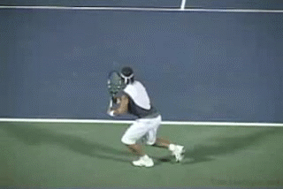
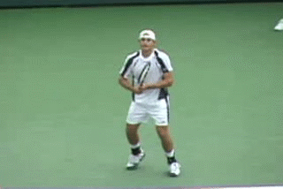

The Tactical Universe¶
Mahboob Khan

Where do you live in the tactical universe?
To implement the tactical aspects of tennis you must have the fundamentals and the ability to execute them under pressure. That is a prerequisite. But if you do have a complete game, then you can consider and utilize the amazing range of option open to skilled players. Over the course of a playing career at almost any level of serious competition, you will find all these tactical possibilities can come into play against certain opponents at certain times.

The two modern weapons: the serve and the forehand.
Here for your consideration is my personal overview of this tactical universe, learned from a lifetime of experience as a player and as a coach, playing competitive matches and then observing them in the juniors, in the pros, and at the club level. When you have had the experience of using the full range of tactics, of playing against them, of watching and feeling them change, evolve, ebb, and flow in individual matches and over the course of many matches, when you know all this intimately, because it is all a part of you, physically and emotionally, then truly you have become a tennis player!
Some General Precepts
1. Have at least two weapons, usually the serve and forehand
2. Learn to hate your unforced errors.
3. Know your own game as well as you know your opponent's.
4. At any point in a match be able to answer this question - who is doing what to whom?
5. Be busy like a bee collecting points! Almost all matches are won by the player who wins the most points.
6. If you take care of the process the outcome will take care of itself.
7. Give your best effort at all times.
8. Respect to yourself, your opponent and the game of tennis.
When You Are Serving
Your percentage of first serves should be around 70% and higher for many players if they don't have great velocity or are capable of hitting aces. Keep the returner guessing with wide, body, and up the T serves. Use spin variations. Hit the ball flatter, then with more kick, then with more slice so that the receiver is confused what to expect.

A wide serve and a crosscourt volley--a proven, classic pattern.
If you are leading 40-0, or 40-15, take calculated risks by serving and volleying, putting pressure on the returner to pass. I do not recommend serving and volleying on each and every point, because this will allow the receiver to plan his returns. Just think of Andre Agassi playing Taylor Dent, probably the best serve and volleyer of the present modern players.
If you hold your service games effectively, that will put mental pressure on your opponent's service game. Make him think about your serve! This will often increase your chances to break serve by pushing him to try to play a little too well.
Here are some classic patterns you should master. A wide serve followed by a cross-court volley or big forehand ground stroke will put you in a commanding position to win the point. A wide serve followed by a wrong-footing shot is a great tactic on a faster court or if you play on clay. Against two-handed backhand players, a strong serve into the body often hit with topspin will jam the receiver forcing errors or weak returns.
When You Return
Always watch the toss and try to track the ball from the server's racket. If the serve is deep and difficult, return cross-court or deep down the middle--the percentage play.

Punish second serves to win points and force the server into trying too hard.
If the serve is short and easy, be aggressive and return down the line. You can hit a forcing drive or use the "chip and charge" tactic. If you learn to punish the second serve that will force the server to try to do "too much" with the first serve and lead to a few double faults.
If you are playing a serve-and-volleyer, your first passing shot should be low and dipping, forcing the volleyer to hit up and enabling you to pass cleanly on the next shot. Remember a successful lob is also a passing shot.
On a faster serve, block the ball back. Remember, your first priority is to return the ball deep to neutralize the server's advantage so that you are on equal terms with him. If you have seen Roger Federer play Andy Roddick you have seen this work.
If your opponent hits most second serves to your backhand, as the toss goes up run around and hit a powerful inside-out or inside-in forehand.
Attack and Defense In Baseline Rallies
Move your opponent around by hitting more crosscourt shots, taking the center away from him, and then on a shorter ball change direction and hit a down the line winner or approach shot.
Stay with your opponent stroke by stroke, deep to deep, cross court to crosscourt, until he or she misses, or gives you a short ball. When you get the short ball, you will have the following options.

On a high short ball, attempt a winner.
If the ball is shoulder or chest high, attempt a winner and follow your winner to the net so that forward momentum is created and to block the ball with a volley (sometimes intended winners comes back!)
If the ball is low to your backhand, hit a backhand slice approach shot down the line and get into the net. Many combinations are possible: Approach down the line, volley cross-court; approach down the line and hit a wrong-footing volley down the line, which functions almost as a second approach.
If the ball is easy and higher than the level of the net, you can either hit a forehand winner down the line. Or if your opponent is a one-hander you can hit a heavy topspin loop to his backhand and close in for a volley. Recognize the pluses and minuses of the various strokes: one-handers have difficulty handling high loopy balls.

Use low volleys as a second approach shot.
At the Net
When you are at the net follow this rule of thumb: on low and difficult balls use your first deep volley as a second approach down the line, then move in. When you have high and easy volleys, put them away cross-court or angle them away to the open court for winners. Your response must match the situation, keeping in view the difficulty element!
At the net realize that points often end with dramatic winners. Do not be discouraged if your opponent makes a good passing shot. The question is not, can he hit one, but can he make more than he misses, especially later in a match when the pressure is really on.
If your opponent is pinned behind the baseline, you can also attempt a drop shot and go to the net to block off any possible get by your opponent. Remember: there is only one correct option: the option with which you win the point!

Some players hit their best shots on the run.
Understand Court Geometry
Your opponent moves more when you hit cross-court shots and he hits down the lines; but you move more when he hits cross-courts and you hit down the line shots!
Using the crosscourt, pull your opponent wide on his strong side and then hit to his weak side. If you want to expose a weakness sometimes you have to hit to his strong wing first. Once you have pulled him wide on his weak side, hit again wide to his strong side. He must hit his favorite shots on the run.
Mixing it up is a good option, especially against players who may have more power than you. Try to figure this out in the warm up and in the first 2-3 games. Put your opponent in a situation he does not like.
Some players miss from certain locations on the court: If he likes high balls, give him low balls; if he likes low balls, give him high balls. Use topspin and underspin, hard and soft, high and low, cross-court and down the line, deep and short, to throw off your opponent's rhythm. Topspin mixed with slices are often quite a deadly recipe against western grip players.

Can you take your opponent to his tolerance point?
Some players miss when they have to move; some hit great shots on the run: Recognize which type you are dealing with. Versus a player who misses when he has to move, make him move laterally and vertically - jerk him around! But what about players like Nadal or Sampras who hit great angle shots on the run? Against these players you should hit deep down the middle to cut off the angles and force them to generate angles of their own.
Tolerance
Each player has a "tolerance point". Even Roger Federer misses when a player like Nadal returns all his shots, and at certain tight situations of the match such as 4-all in the final set. Take the game to him -- to that tolerance point!
Do not panic if you lag behind. Tennis matches can be won from 0/6, 0/5, love-40 down. A player who is now coaching Andy Roddick (that would be James Scott Connors) once said: "It ain't over till it's over."
All overheads are not the same.
If your opponent has used a good combination to press your backhand and has covered your obvious passing shot, hit an underspin backhand short and low cross-court, forcing him to hit his volley from below the level of the net allowing you to pass him on the next ball. This is called the combination pass.
There are many types of overhead smashes. On short lobs, smash short (slam dunk style). On deep lobs, smash deep to your opponent's backhand, or in the open court. If you have to move back and bounce the ball, be accurate but don't over hit if you can't hit a clean winner.
Final Thoughts
You should not be the first one to commit "process" mistakes or unforced errors. Keep in mind the "makeability" of the shot. Weigh your options but stick with what you feel comfortable with and think you can actually execute in the given situation. Have fun developing the dimensions of your game. There is always room for more creativity in devising winning strategies.
Mahboob Khan is acknowledged as the top developmental coach in his home country of Pakistan, and travels internationally with players competing at all levels, including his daughter Sarah Khan, who has won multiple national Pakistani singles titles. He is well known in the international tennis community for his extensive contributions to the Tenniswarehouse instructional message boards, populated by thousands of players and coaches from around the world. Mahboob is based in Islamabad, where he is the Tennis Program Dire